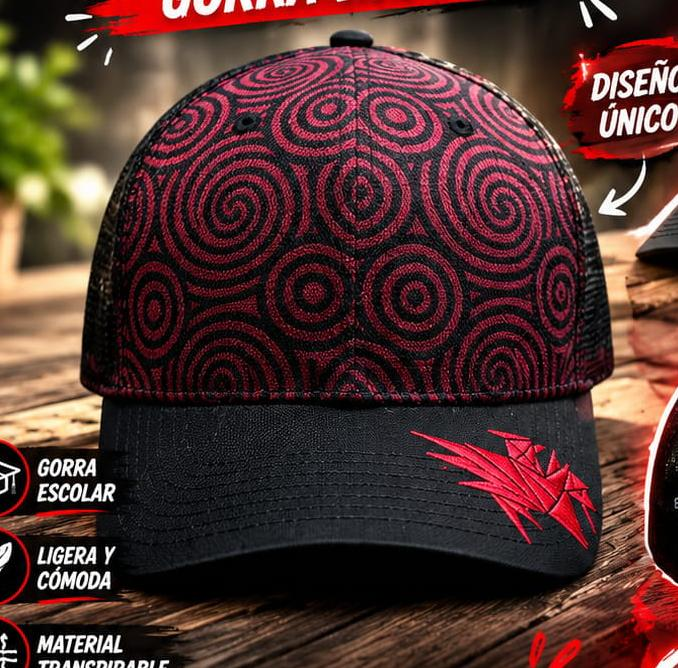
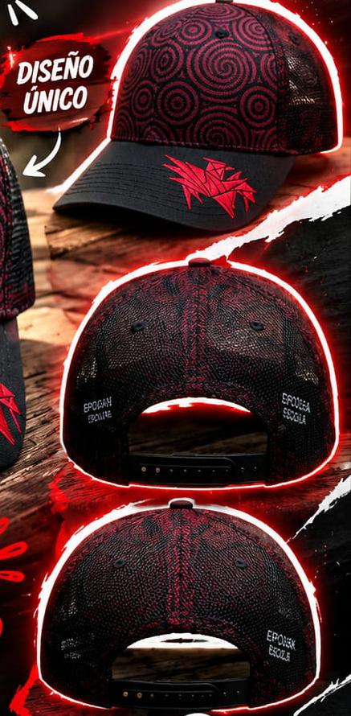

Proyecto de Elaboración de una Gorra Escolar
EpoGorra es una gorra escolar diseñada para representar la identidad, creatividad y trabajo en equipo de los estudiantes. Su elaboración requirió planeación, selección de materiales y técnicas de confección para obtener un producto resistente, cómodo y atractivo.

Diseñar y elaborar una gorra escolar funcional que permita aplicar conocimientos de diseño, medición, corte y costura, obteniendo un producto final de calidad.

La EpoGorra es una gorra escolar elaborada con materiales resistentes y un diseño atractivo en colores vino, negro y blanco. Este proyecto permitió desarrollar habilidades de creatividad, organización y trabajo colaborativo.
Se desarrolló el diseño conceptual de la EpoGorra, analizando ideas creativas, valores y la identidad que representa el producto para la comunidad estudiantil.
Se elaboró una infografía con los resultados del estudio de mercado realizado para conocer las preferencias de los posibles consumidores de la gorra.
Se creó un cartel publicitario para promocionar la EpoGorra, utilizando herramientas digitales de diseño y comunicación visual.
Se investigó y explicó el proceso de industrialización de la gorra, considerando materiales, producción y comercialización del producto.
Se realizó una investigación sobre la historia de la gorra, su origen, evolución y uso a través del tiempo en diferentes culturas y contextos.
Se elaboró el prototipo de la EpoGorra, desarrollando bocetos, propuestas visuales y el modelo preliminar del producto final.